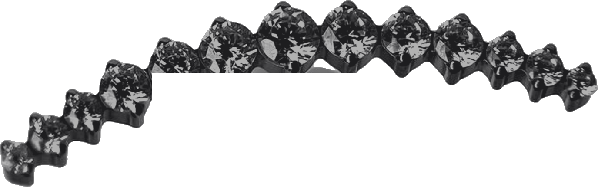
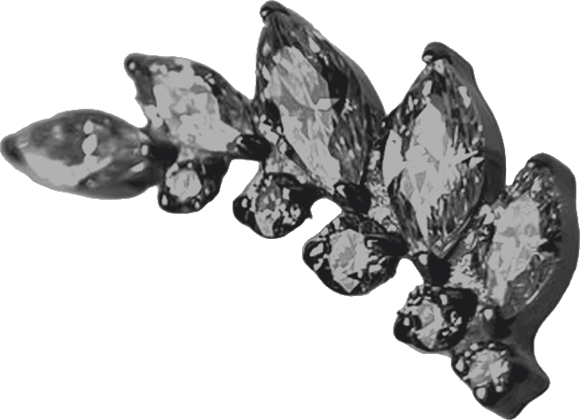
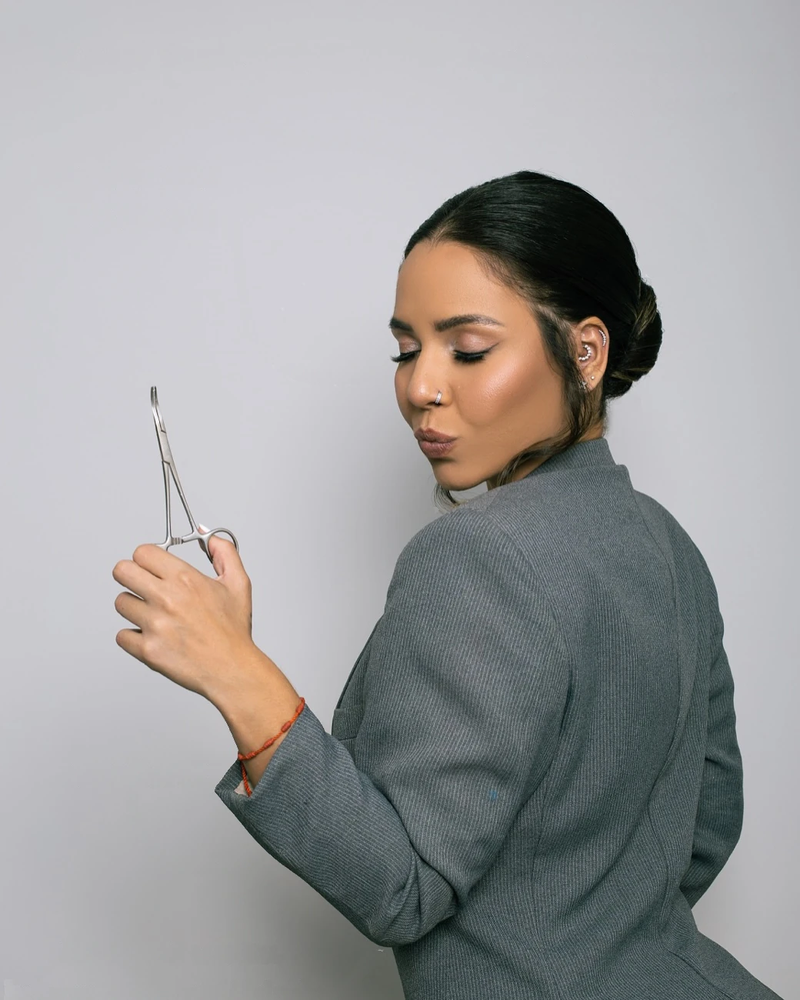

Perfuração + joia
O procedimento inclui a perfuração e a joia, escolhidas juntas, para garantir a qualidade e a segurança do resultado.
Perfuração e joia escolhidas juntas.
Pronta entrega, com retirada no estúdio em Piracicaba ou envio para todo o Brasil.
Catálogo e estoque direto da Nuvemshop
Titânio ASTM F136 e ouro 14K e 18K, com garantia vitalícia do fabricante. Para trocar a joia de uma perfuração cicatrizada: escolha aqui e finalize a compra na loja da Mila na Nuvemshop.
Catálogo, preços e estoque atualizados pela Nuvemshop
Prévia: vitrine de demonstração com as joias do seu perfil. Preços e estoque ilustrativos até ligar a sua loja da Nuvemshop.

Projetos de orelha, nariz, umbigo, microdermal e surface. Cada anatomia avaliada antes, cada joia escolhida para ela.

É cuidado, biossegurança, técnica, prática e conhecimento. É entender que cada anatomia é única.
O procedimento inclui a perfuração e a joia, escolhidas juntas, para garantir a qualidade e a segurança do resultado.
Perfuração e joia escolhidas juntas.
A dor é bem momentânea. Anestésico não é indicado para esse procedimento e pode comprometer a biossegurança. Tudo é feito de forma estéril e segura.
Dor momentânea, tudo estéril.
Joias em titânio ASTM F136 e em ouro 14K e 18K com certificação Amagold, feitas à mão, com garantia vitalícia do fabricante.
Titânio F136 e ouro certificado.
Depois do inchaço inicial, a haste é ajustada: menos atrito, menos risco de migração e a joia bem encaixada. Seu piercing evolui junto com a cicatrização.
Ajuste da haste após o inchaço.

Oi, eu sou a Mila. Sou body piercer desde 2021 e, desde que escolhi essa profissão, me dedico a estudar, evoluir e oferecer uma experiência segura, acolhedora e personalizada para cada pessoa que passa pelo meu estúdio.
Se adornar vai muito além de colocar uma joia: é marcar fases, expressar personalidade, resgatar autoestima e celebrar transformações. Fazer parte desses momentos é o que eu mais amo no meu trabalho.
Atendimento com horário marcado. Conte o que você quer fazer e a mensagem chega pronta no meu WhatsApp.
A perfuração ou o projeto que você quer.
O formulário monta tudo para o WhatsApp.
Olho a sua anatomia e indico a joia.
Estéril, com retorno para o downsize.
Não trabalho dessa forma. O procedimento envolve perfuração + joia, para garantir a qualidade e a segurança do resultado. Você escolhe a joia comigo, entre titânio e ouro.
A dor é bem momentânea, pode ficar tranquila. Não utilizo anestésico, pois não é indicado para esse tipo de procedimento e pode comprometer a biossegurança. Tudo é feito de forma estéril e segura.
Na perfuração nova a haste é mais longa, para acompanhar o inchaço. Depois que ele passa, a haste é trocada por uma do tamanho certo: reduz atrito e irritação, diminui o risco de migração e melhora o encaixe da joia.
Na cicatrização, não. Dormir em cima muda o ângulo da perfuração e diminui a circulação, e isso inflama. Para orelha, a almofada com furo no meio resolve.
Não. O álcool seca e danifica as células novas e atrasa a cicatrização. O melhor é o bom e velho sabão neutro e o soro fisiológico.
No período de cicatrização, não é indicado: areia, maresia, sol e água do mar prejudicam o furo. Por isso o inverno é a melhor época para colocar um piercing novo.
Nem todo piercing "fechado" realmente fechou. Às vezes o canal está só obstruído e dá para desobstruir com o instrumento certo, sem nova perfuração. Por isso a avaliação faz toda a diferença.
Rua Governador Pedro de Toledo, 497, Sala 3
Piracicaba-SP, 13400-070
No site publicado, este botão abre na sua loja da Nuvemshop, já na opção escolhida. Lá a cliente calcula o frete e paga com Pix, cartão ou boleto.
Prévia de demonstração: a loja ainda não está ligada.